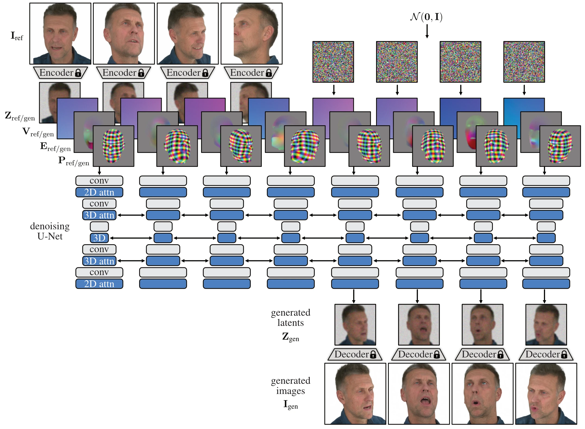
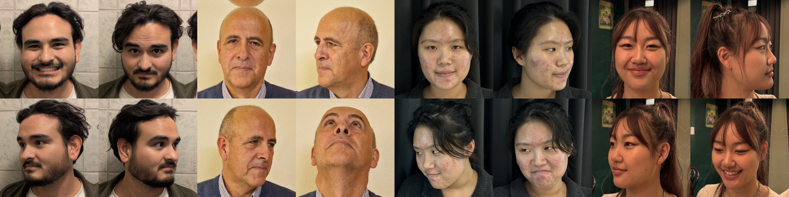
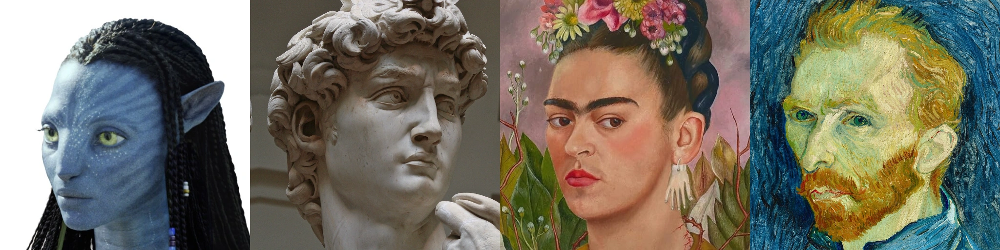

TL;DR: Our model can create realistic 4D avatars using any number of reference images.
Overview
Our model works in two stages: First, a morphable multi-view diffusion model (MMDM) generates a large number of images from different views and expressions from the reference images. Then, we fit a 4D avatar to the generated images and the reference images. This avatar can be controlled via 3DMM and rendered in real time.
Interactive Viewer
Click on the images below to render 4D avatars in real-time in your browser, powered by Brush. Note that this is experimental and quality may be reduced. Please ensure that your available VRAM is greater than 3GB.
Browser Not Supported
Method
Overview of CAP4D. (a) The method takes as input an arbitrary number of reference images \(\mathbf{I}_\text{ref}\) that are encoded into the latent space of a variational autoencoder. An off-the-shelf face tracker estimates a 3DMM, \(\mathbf{M}_\text{ref}\), for each reference image, from which we derive conditioning signals that describe camera view direction, \(\mathbf{V}_\text{ref}\), head pose \(\mathbf{P}_\text{ref}\), and expression \(\mathbf{E}_\text{ref}\). We associate additional conditioning signals with each input noisy latent image based on the desired generated viewpoints, poses, and expressions. The MMDM generates images through a stochastic input–output conditioning procedure that randomly samples reference images and generated images during each step of the iterative image generation process. (b) The generated and reference images are used with the tracked and sampled 3DMMs to reconstruct a 4D avatar based on a 3D Gaussian splatting representation.
Morphable Multi-view Diffusion Model (MMDM)

MMDM architecture. Our model is initialized from Stable Diffusion 2.1, and we adapt the architecture for multi-view generation following CAT3D. We use a pre-trained image encoder to map the input images into the latent space, and we use the latent diffusion model to process eight images in parallel. We replace 2D attention layers after 2D residual blocks with 3D attention to share information between frames. The model is conditioned using images that provide information such as head pose (\(\mathbf{P}_\text{ref/gen}\)), expression (\(\mathbf{E}_\text{ref/gen}\)), and camera view (\(\mathbf{V}_\text{ref/gen}\)). These images are obtained from a 3DMM and concatenated to the latent images. The denoised latent image is decoded using a pre-trained decoder.
Gallery
We show various avatars generated using CAP4D in different settings: avatars from few reference images,
avatars from single reference images, and more challenging settings such as avatars from images generated
via text-prompt and avatars from artwork. Note that while the MMDM inherits weights from Stable Diffusion, we do not train the MMDM on non-photoreal images.
Please click on the arrow buttons to the sides to view all results.
Reference images are shown in the top row, images generated by the MMDM in the middle row and
the final 4D avatar in the last row.
Few images to avatar

reference images
reference images
images generated with MMDM
CAP4D avatar
Single image to avatar
reference images
images generated with MMDM
CAP4D avatar
Text to image to avatar
reference images
images generated with MMDM
CAP4D avatar
Artwork to avatar

reference images